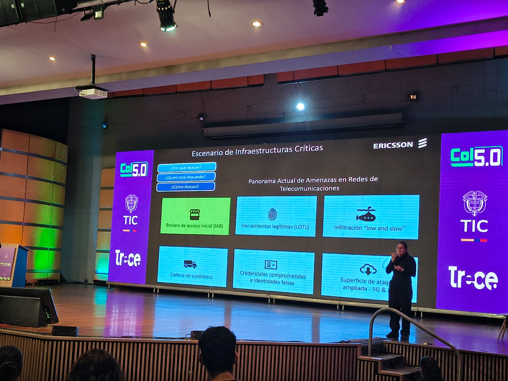
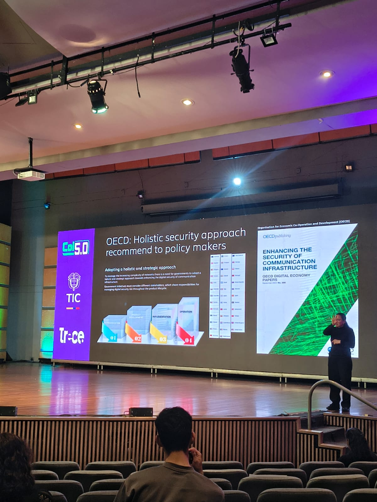
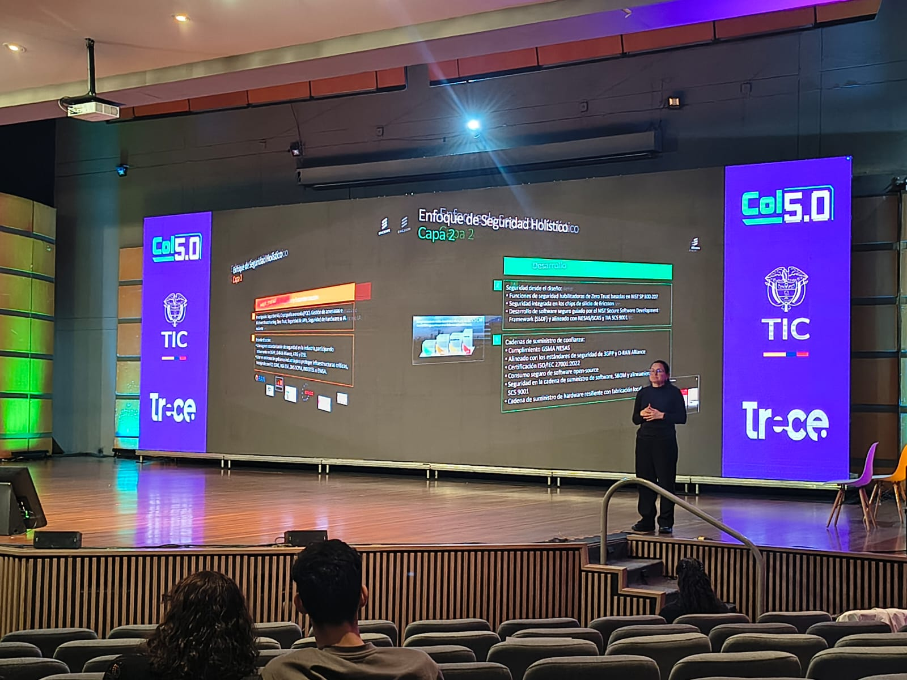
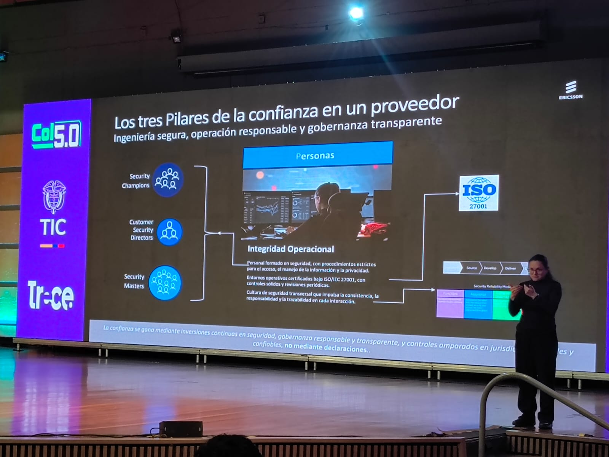
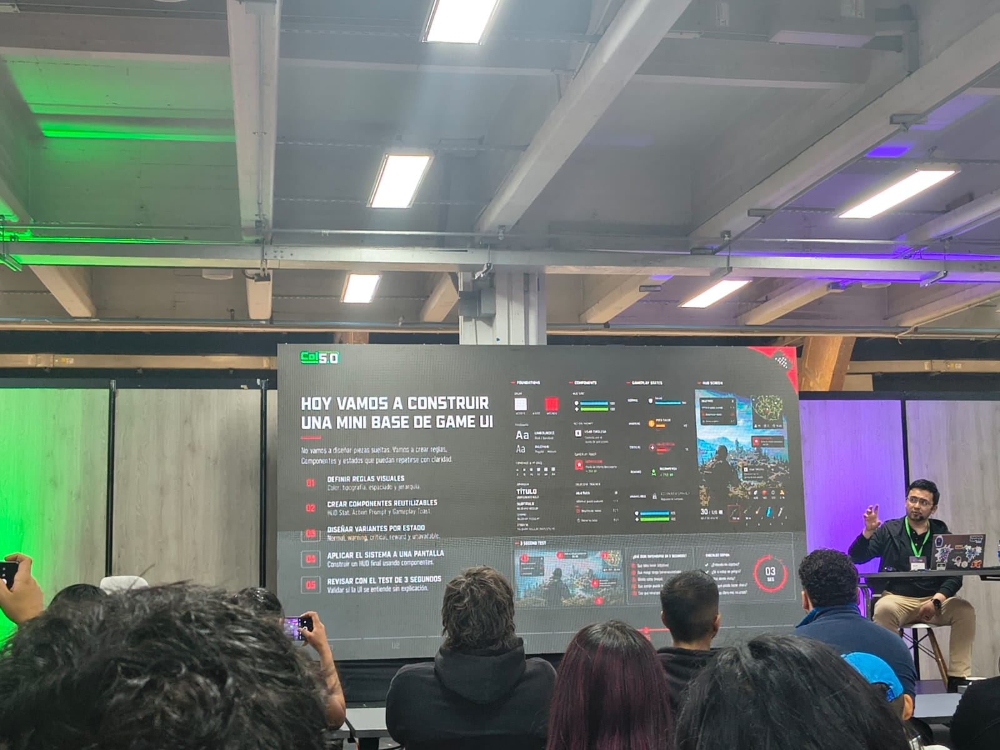

Protección de infraestructuras digitales críticas
🎤 Conferencista: Yanis Cardoso Stoyannis
// galería fotográfica






Ciberseguridad en la Era Digital: Amenazas, Estrategias y Futuro
Yanis Cardoso Stoyannis
Tema Principal
Protección de infraestructuras críticas e identidades digitales
Resumen Reflexivo
La conferencia me permitió comprender mejor la importancia de la ciberseguridad en la actualidad. Durante la charla se explicó cómo el crecimiento de la tecnología también ha traído nuevos riesgos para las personas y las organizaciones, como el robo de información, los correos fraudulentos y otros ataques que buscan aprovechar errores de los usuarios. Además, se presentaron algunos ejemplos reales que ayudaron a entender cómo estos problemas pueden afectar tanto a empresas como a usuarios comunes.
Uno de los temas que más llamó mi atención fue la gran demanda de profesionales especializados en ciberseguridad. El conferencista destacó que actualmente existe una necesidad creciente de personas capacitadas para proteger sistemas y datos, lo que representa una oportunidad importante para quienes estamos estudiando áreas relacionadas con la tecnología. También se resaltó la importancia de mantenerse actualizado, ya que las amenazas evolucionan constantemente.
Otro aspecto interesante fue la idea de que la seguridad no depende únicamente de expertos o herramientas especializadas. Se enfatizó que cada persona tiene una responsabilidad en la protección de la información mediante buenas prácticas, como utilizar contraseñas seguras, verificar la autenticidad de los mensajes que recibe y ser más consciente de los riesgos presentes en internet. Esto me hizo reflexionar sobre cómo pequeñas acciones pueden contribuir a evitar problemas mayores.
Como estudiante de desarrollo de software, esta conferencia me ayudó a comprender que la seguridad debe formar parte de cualquier proyecto tecnológico desde sus primeras etapas. No basta con desarrollar aplicaciones que funcionen correctamente; también es necesario garantizar que sean seguras para los usuarios y sus datos. En general, fue una experiencia muy enriquecedora dentro de Colombia 5.0, ya que fortaleció mis conocimientos y me permitió entender mejor la responsabilidad que tenemos como futuros profesionales del sector tecnológico.
Palabras Clave
Cybersecurity in the Digital Age: Threats, Strategies and the Future
Yanis Cardoso Stoyannis
Main Topic
Protection of critical infrastructures and digital identities
Reflection Summary
The conference helped me better understand the importance of cybersecurity in today's world. During the presentation, it was explained how the growth of technology has also brought new risks for both individuals and organizations, such as data theft, fraudulent emails, and other types of attacks that take advantage of user mistakes. In addition, several real-life examples were presented, which helped me understand how these problems can affect both companies and everyday users.
One of the topics that caught my attention the most was the high demand for cybersecurity professionals. The speaker highlighted that there is currently a growing need for people trained to protect systems and data, which represents an important opportunity for those of us studying technology-related fields. It was also emphasized that staying up to date is essential because cyber threats are constantly evolving.
Another interesting aspect was the idea that security does not depend only on experts or specialized tools. The speaker emphasized that everyone has a role in protecting information by following good practices, such as using strong passwords, verifying the authenticity of received messages, and being more aware of online risks. This made me reflect on how small actions can help prevent major security problems.
As a software development student, this conference helped me understand that security should be part of any technological project from its earliest stages. It is not enough to develop applications that work correctly; it is also necessary to ensure that they are safe for users and their data. Overall, it was a very enriching experience at Colombia 5.0, as it strengthened my knowledge and helped me better understand the responsibility we have as future professionals in the technology sector.
Keywords
Interfaces de Usuario y Experiencia de Usuario
🎤 Conferencista: Andrés Felipe Pisso Tobar
// video de la conferencia
// galería fotográfica




Diseñando el Futuro: UI/UX en la Era de la IA
Andrés Felipe Pisso Tobar
Tema Principal
Diseño de experiencias digitales accesibles e inclusivas
Resumen Reflexivo
La conferencia exploró cómo el diseño de interfaces ha evolucionado de ser una disciplina puramente estética a convertirse en un pilar estratégico del desarrollo de productos digitales. El ponente presentó el concepto de diseño centrado en el humano (Human-Centered Design) como marco rector para construir experiencias que sean funcionales, accesibles y emocionalmente resonantes.
Especialmente relevante resultó la integración de la Inteligencia Artificial en los flujos de diseño: herramientas que generan prototipos, analizan comportamientos de usuario y personalizan interfaces en tiempo real están redefiniendo el rol del diseñador UX. Sin embargo, el ponente advirtió que la IA debe ser un amplificador de la empatía humana, nunca un sustituto de ella.
La sección sobre accesibilidad web resultó particularmente enriquecedora, recordando que diseñar para todos —incluyendo personas con discapacidades visuales, motoras o cognitivas— no solo es una obligación ética sino también una ventaja competitiva que amplía el alcance real de cualquier producto digital.
Palabras Clave
Designing the Future: UI/UX in the AI Era
[Speaker Name]
Main Topic
Design of accessible and inclusive digital experiences
Reflection Summary
The conference explored how interface design has evolved from a purely aesthetic discipline into a strategic pillar of digital product development. The speaker presented Human-Centered Design as the guiding framework for building experiences that are functional, accessible, and emotionally resonant.
Particularly relevant was the integration of Artificial Intelligence into design workflows: tools that generate prototypes, analyze user behavior, and personalize interfaces in real time are redefining the UX designer's role. However, the speaker warned that AI must be an amplifier of human empathy, never a substitute for it.
The section on web accessibility was especially enriching, reminding us that designing for everyone — including people with visual, motor, or cognitive disabilities — is not only an ethical obligation but also a competitive advantage that expands the real reach of any digital product.
Keywords